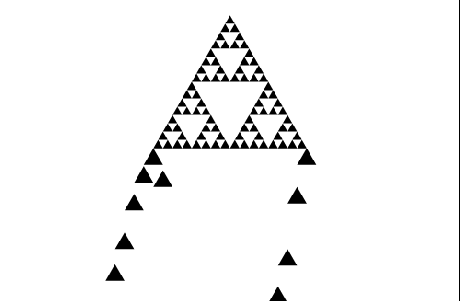
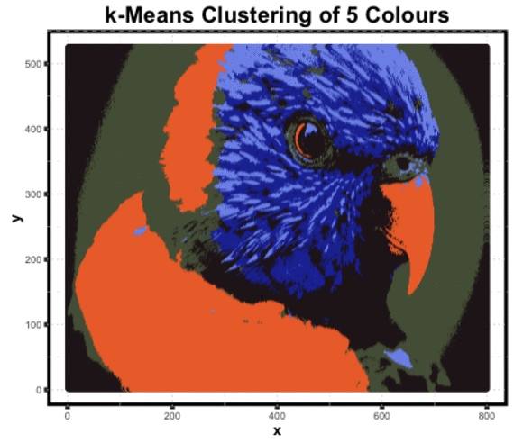
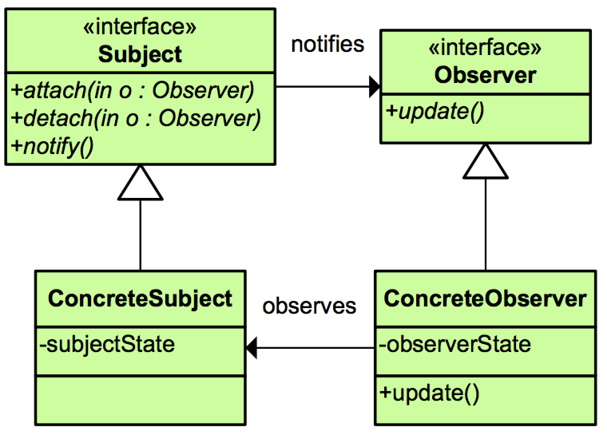
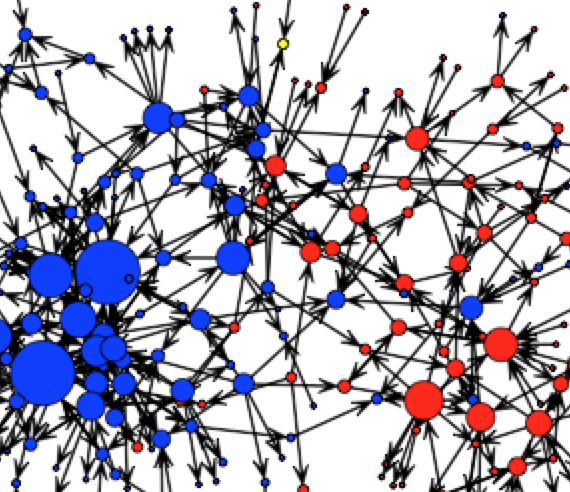

|
Associate Professor Fulbright Scholar Director Principle Consultant |
Computer Science and Engineering, Wright State University School of Computer Science, Reykjavik University Machine Learning and Complex Systems Laboratory, Wright State University Forefront Analytics and Consulting, LLC |
I am on leave from Wright State University until August 2021.
My availability for academic service and frequency of WSU e-mail access is limited.
My interests are in machine learning and complex cyber-systems analysis. My current work spans explainable AI, deep learning, topological data analysis, and their applications in complex cyber-securtity, sociotechnological, and geospatial systems. My work has been supported by NSF, AFRL, ORISE, and the Ohio Federal Research Network.
Recent news an updates about my research and scholarship can be found at the homepage of the Machine Learning and Complex Systems Lab at Wright State. The lab's work is powered by amazing WSU students!I was previously an Interim Researcher at ABB Corporate Research and a visitor of the Dependable Distributed Systems and Networks lab at National Taiwan University as an NSF EAPSI Fellow. I am also a twice summer alumnus of Bell Labs. I received my Ph.D. in Computer Science and Engineering from the University of Connecticut.
I'm happy to have been the receipient of the following faculty awards at WSU:
- College of Engineering and Computer Science Excellence in Teaching Award [student voted!] (2018)
- College of Engineering and Computer Science Outstanding Research Award (2018)
- Wright State University President's Award for Early Career Achievement (2017)
- College of Engineering and Computer Science Early Career Award (2016)
Current Students
- Kyle Brown (PhD)
- Jameson Morgan (MS)
- Alex Groeger (BS)
- Ning Xie (PhD)
- Amanda Tobar (BS)
|
Previous Students Ning Xie (PhD) Mahdieh Zabihimayvan Walter Waldow Matthew Piekenbrock Jace Robinson Lakshika Balasuriya Samir Yelne Nathan Rude Matthew Barrett Logan Rickert Scott Duberstein Nripesh Trivedi |
PhD, 2020 PhD, 2020 MS, 2020 MS, 2018 MS, 2018 MS, 2018 MS, 2016 MS, 2016 BS, 2020 BS, 2018 BS, 2017 BS, 2015 |
Position Following Graduation Research Scientist, Amazon Assistant Professor, Central Connecticut State University Data Scientist, Tenet3 Cybernetics PhD Student, Michigan State PhD Student, Purdue Research Engineer, Gracenote Data Scientist, Cisco Systems Software Engineer, LexisNexis Special Services Software Engineer, Norothrup Grumman Logan where are you? Associate Engineer, Sensor Systems, Ball Aerospace PhD Student, UC Riverside |
Teaching
-  CS 2200: Discrete Structures and Their Algorithms (Sp17, Fa17, Sp18, Fa18, Sp19)
- 
CS 3250: Foundations of Data Science (Su15, Sp16, Fa16) [Student Project Sites]
- 
CEG 4100: Introduction to Software Engineering (Fa14, Fa15, Fa16, Fa17, Fa18)
- 
CS 7210: Network Science (Sp15, Sp16, Sp17, Sp18, Sp19)
Awards
- Fulbright Scholar, U.S. Department of State
- Excellence in Teaching, College of Engineering and Computer Science, Wright State University
- Outstanding Research Award, College of Engineering and Computer Science, Wright State University
- University President's Award for Early Career Achievement, Wright State University
- Early Career Achievement Award, College of Engineering and Computer Science, Wright State University
- Best Teaching Paper Runner-up Award, SIGDSA Business Analytics Congress
- Best Paper Award (Industry Track), ACM/IEEE Intl. Conf. on Advances in Social Network Analysis and Mining
- CISE Research Initiation Initiative Award, National Science Foundation
- Doctoral Dissertation Fellowship, University of Connecticut
- Best Paper (3rd place) Award, Intl. Conf. on Software Engineering and Knowledge Engineering
- Best Paper Award, IEEE Intl. Conference on Machine Learning and Applications
- Graduate Research Award, Transportation Research Board of the National Academies
- East Asia and Pacific Summer Institutes Fellowship, National Science Foundation
- Best Student Paper Nominee, IEEE Intl. Symposium on Network Computing & Applications
- New England Scholar, University of Connecticut
Professional Service
Editorial Board, Social Network Analysis and MiningEditorial Board, International Journal of Web Engineering and Technology
Editorial Board, Software Networking Journal
|
(Abridged) Referee Service:
|
(Abridged) Program Committee Service:
|